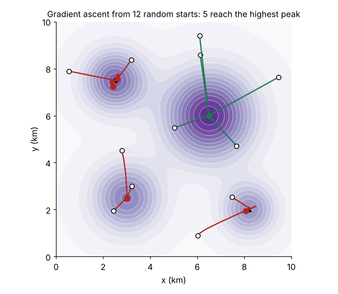
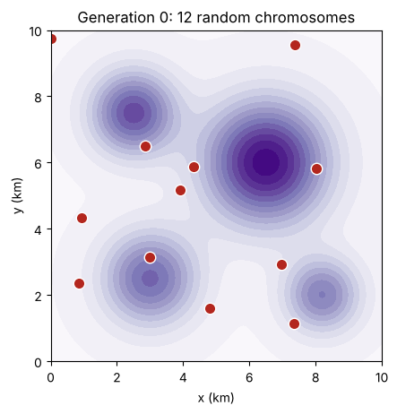
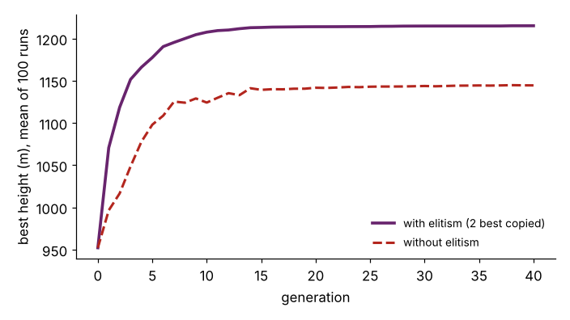
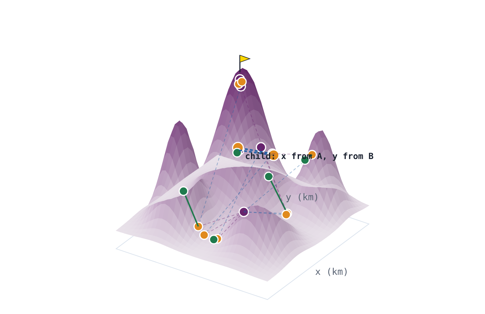
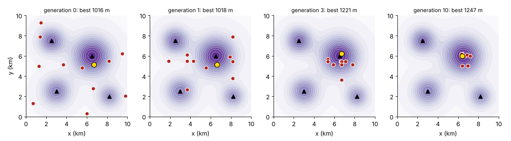
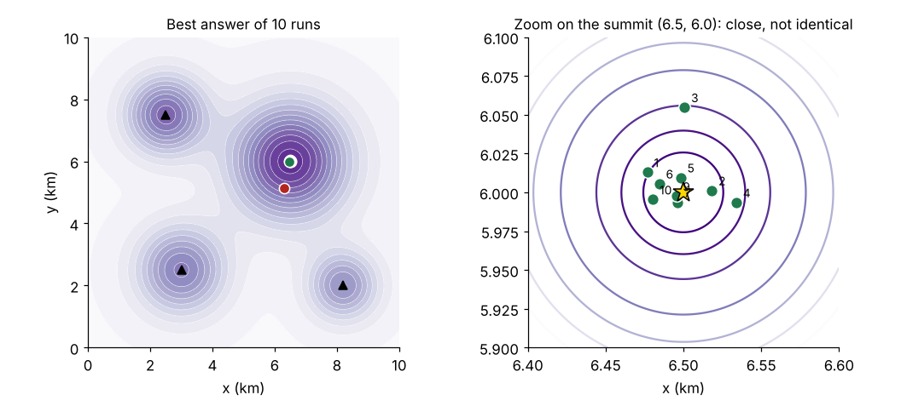
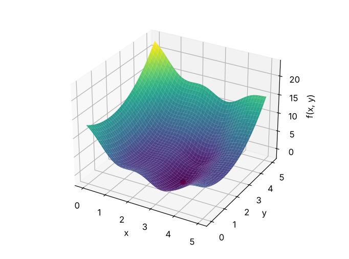
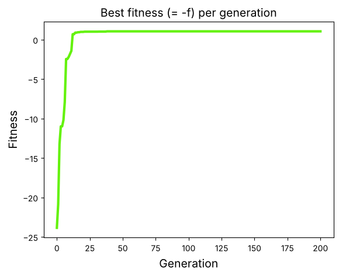

PART A
Searching with a population
Last week we found optima with calculus and with gradient-based iterative methods. This week we look at where those methods fail and at a completely different way of searching: the genetic algorithm, which borrows its idea from evolution by natural selection. Next week we meet a second method of the same family, particle swarm optimisation. The interactive figures (hikers trapped on local peaks, crossover, and a genetic algorithm climbing a 3-D mountain) are in the lecture slides.
1Why do we need metaheuristic methods?
The methods of last week fall into two groups. Analytical methods solve \(f'(x) = 0\) or \(\nabla f = \mathbf{0}\) by hand: exact, but only for formulas we can differentiate and equations we can solve. Iterative methods such as gradient descent and Newton’s method start from a guess and improve it step by step using the local slope: they work for many more problems, and they are computationally efficient. But they are local searches: like a hiker in fog, they only feel the ground under their feet.
1.1 Trap 1: local optima
This week we use a mountain range with four peaks, defined on a 10 km × 10 km square. The highest peak, 1250 m, is at \((x, y) = (6.5, 6.0)\) km; three lower peaks, of 1005, 901 and 804 m, are local optima. The height is a sum of four smooth bumps on a base of 150 m:
Drop hikers at random places and let each one climb by gradient ascent, \(\mathbf{x}_{k+1} = \mathbf{x}_k + \alpha\nabla h(\mathbf{x}_k)\). Each hiker ends at the top of the hill on which it started, the peak whose basin of attraction contains the starting point:

The same experiment in code, with 1000 random starts. The function climb is last week’s gradient method in two dimensions:
def climb(x, y, alpha=0.001, n_max=300):
"""Gradient ascent; x and y can be arrays of many starting points."""
for k in range(n_max):
gx, gy = grad_h(x, y)
x = np.clip(x + alpha * gx, 0, 10)
y = np.clip(y + alpha * gy, 0, 10)
return x, y
rng = np.random.default_rng(1)
x0, y0 = rng.uniform(0, 10, (2, 1000)) # 1000 random starting points
x, y = climb(x0, y0) # all hikers climb at once
tops = np.array([h(cx, cy) for cx, cy, a, w in PEAKS])
ends = h(x, y)
for top in tops:
print("peak of %4.0f m: %3d hikers" % (top, np.sum(abs(ends - top) < 5)))
print("still on a slope:", np.sum(np.min(abs(ends[:, None] - tops), axis=1) >= 5))peak of 1250 m: 370 hikers peak of 1005 m: 212 hikers peak of 901 m: 258 hikers peak of 804 m: 160 hikers still on a slope: 0
Only about a third of the starting points lead to the highest peak. A single run of a gradient method is a gamble whose odds depend on the size of the basins, which we do not know in advance.
1.2 More reasons gradients struggle
- The learning rate must be tuned. Too large and the steps overshoot narrow peaks and bounce around them, or diverge; too small and the method crawls. For this mountain, \(\alpha = 0.003\) already overshoots the narrow peaks, while \(\alpha = 0.00005\) leaves many hikers half-way after 150 steps. The right value depends on the steepness and curvature of the landscape.
- Derivatives may not exist. Many engineering objectives are the output of a simulation (a Monte Carlo model, a finite element analysis, a traffic simulation): we get a number, but no formula to differentiate. Numerical derivatives of a noisy simulation are unreliable and costly.
- Many decisions are discrete. The number of turbines, a pipe size from a catalogue, a steel grade, whether to add stiffeners: there is no slope between one catalogue size and the next.
- Rough landscapes. Noise, flat plateaus where the gradient is zero, step changes in cost and penalty terms make the local slope a poor guide to the optimum.
We want a method that searches the whole landscape, needs only the value of the objective, and handles any type of variable. Metaheuristics offer exactly that.
2Heuristic and metaheuristic methods
Traditional optimisation approaches can be broadly classified into four groups:
- Analytical methods: a closed-form solution derived with calculus or algebra. They find the absolute optimum of the function, the global optimum.
- Iterative methods: an algorithm refines an initial guess step by step, for example gradient descent and Newton’s method. They are computationally efficient, but they may get stuck at local optima.
- Heuristic methods: problem-specific strategies or rules of thumb that aim to find good solutions efficiently, usually based on domain knowledge. They produce feasible solutions quickly, but they are not guaranteed to be optimal and do not adapt to other types of problem. Examples: “space wind turbines about seven rotor diameters apart along the prevailing wind”; “always drive to the nearest unvisited site” for a delivery route.
- Metaheuristic methods: high-level, general-purpose search frameworks that guide the search towards optimal or near-optimal solutions. They are problem-independent and can be applied to a wide range of optimisation tasks.
| Analytical | Iterative | Heuristic | Metaheuristic | |
|---|---|---|---|---|
| Needs a formula | yes | yes, or a gradient | no | no: values of \(f\) only |
| Needs derivatives | yes | yes | no | no |
| Search | exact | local, from one point | by a rule | global, with a population |
| Result | global optimum | a local optimum | a good solution | near-global optimum |
| Variable types | continuous | continuous | any | any: real, integer, yes/no |
| Problem-specific | yes | no | yes | no |
| Cost | tiny | low | tiny | many evaluations of \(f\) |
A metaheuristic treats the objective function as a black box: give it a candidate solution, get back a number. Metaheuristics do not guarantee the global optimum, like analytical methods do, but they often provide very good solutions within a reasonable time. The price is computing time: thousands of evaluations of the objective instead of a few gradient steps.
2.1 A family of nature-inspired methods
- Genetic algorithm (GA): inspired by natural selection and genetics. A solution is encoded as a chromosome, and the search proceeds by combining (“marrying”) highly ranked chromosomes. This week.
- Particle swarm optimisation (PSO): inspired by birds flocking and fish schooling. Particles move through the search space with a velocity, which suits continuous problems. Next week.
- Simulated annealing (SA): based on the annealing of metals. It explores the decision space by sometimes accepting worse solutions, with a probability that decreases over time.
- Ant colony optimisation (ACO): inspired by ants depositing pheromones; it works well for combinatorial problems such as routing and scheduling.
2.2 Exploration and exploitation
A central concept in all metaheuristics is the balance between two forces. Exploration means searching broadly across the decision space to discover new, potentially better regions; it prevents the algorithm from getting stuck in poor local optima. Exploitation means refining and improving solutions in promising regions already found; it ensures convergence towards high-quality solutions. Excessive exploration wastes evaluations without converging; excessive exploitation leads to premature convergence onto a suboptimal solution. Every parameter of the genetic algorithm moves this balance one way or the other.
3The genetic algorithm: evolution as optimisation
In nature, individuals that suit their environment better survive longer and have more offspring: survival of the fittest. Offspring inherit a mix of their parents’ genes, with occasional random mutations, and over many generations the population adapts to its environment. John Holland turned this process into a search algorithm in the 1970s: replace the individual by a candidate solution, its genes by the decision variables, and its fitness by the value of the objective function. A population of solutions then evolves, generation after generation, towards better solutions.
| Biology | Genetic algorithm |
|---|---|
| individual | a candidate solution |
| chromosome | the encoded solution, a string of values |
| gene | one decision variable |
| population | a set of candidate solutions |
| fitness | the value of the objective function |
| survival of the fittest | selection of the best as parents |
| mating and inheritance | crossover of two parents |
| mutation | a random change to a gene |
| generation | one iteration of the algorithm |
The algorithm, as an ordered list of steps:
- Generate a random population of chromosomes.
- Evaluate the fitness of every chromosome with the objective function, and rank the chromosomes.
- If the stopping criterion is met (a maximum number of generations, or no improvement of the best fitness for a set number of generations), stop and report the best chromosome.
- Select parents for the next generation: fitter chromosomes are more likely to be chosen.
- Cross over pairs of parents: each pair gives birth to two children.
- Mutate a few genes of the children at random.
- Copy the best chromosomes unchanged (elitism); together with the children they form the new generation. Go back to step 2.
Differs from the handout. The handout’s algorithm ends with “go back to step 1”, where step 1 creates a random population. The loop must go back to the evaluation of the fitness (step 2 here): a new random population every generation would throw away all the progress made. The handout also introduces an objective function “with 10 inputs” but writes a sum of five terms, \(f = \sum_{i=1}^{5} w_i x_i\); either way, the number of genes equals the number of inputs.
The genetic algorithm is highly flexible: chromosomes can represent any type of variable (real numbers, integers, yes/no values, items from a list), and the algorithm needs only the value of the objective, so it works for non-differentiable problems, for global search, and also for problems with several objectives.
4Chromosomes and the population
The first step in any genetic algorithm is the encoding: how a solution is written as a chromosome. A chromosome is one candidate solution written as a string of values; each value is a gene, one decision variable. The length of the chromosome, its number of genes, equals the number of decision variables.
- The mountain: two genes, the position \(x\) and \(y\). The chromosome
[6.2, 4.8]is the point \(x = 6.2\) km, \(y = 4.8\) km, and its fitness is the height there, \(h(6.2, 4.8) = 850\) m. - A beam design could have four genes of different types: width and depth in mm (numbers from a list of standard sizes), steel grade (S275 or S355) and stiffeners (yes or no).
- A truss with 30 members whose cross-sections we choose: 30 genes.
In Python, a population is conveniently a NumPy array with one chromosome per row, of shape (population size, number of genes). Random initialisation draws each gene uniformly between its lower and upper bounds, and the fitness of the whole population is one vectorised call:
rng = np.random.default_rng(3)
pop_size, n_genes = 12, 2
population = rng.uniform(0, 10, (pop_size, n_genes)) # generation 0
fitness = h(population[:, 0], population[:, 1]) # height of every chromosome
order = np.argsort(fitness)[::-1] # rank: best first
print("rank x (km) y (km) h (m)")
for rank, i in enumerate(order, start=1):
print("%3d %6.2f %6.2f %6.0f" % (rank, *population[i], fitness[i]))
X, Y = np.meshgrid(np.linspace(0, 10, 200), np.linspace(0, 10, 200))
plt.contourf(X, Y, h(X, Y), levels=16, cmap="Purples")
plt.plot(population[:, 0], population[:, 1], "o", color="#B3261E", mec="white", ms=9)
plt.xlabel("x (km)"); plt.ylabel("y (km)"); plt.gca().set_aspect("equal")
plt.title("Generation 0: 12 random chromosomes")
plt.show()rank x (km) y (km) h (m) 1 2.98 3.14 764 2 8.01 5.82 704 3 2.84 6.49 589 4 4.31 5.87 437 5 7.35 1.14 356 6 6.96 2.93 314 7 3.91 5.17 296 8 4.79 1.60 252 9 0.86 2.37 225 10 7.38 9.56 170 11 0.94 4.33 167 12 0.01 9.73 151

The random points are spread over the whole landscape: unlike a gradient method, the GA starts by exploring everywhere. The population size controls the balance between exploration and cost. A small population is cheap per generation but has little diversity (variety of genes) and can converge quickly onto a local peak; a large population explores better but costs more. The cost of a run is roughly
With 50 chromosomes and 100 generations that is 5000 evaluations: nothing for a formula, but a lot if one evaluation is a one-minute simulation. Typical population sizes are 20 to 200.
5Crossover
Crossover is the main operator of the genetic algorithm, the equivalent of mating. Two parent chromosomes are cut at a random point, between two genes, and the parts after the cut are exchanged: two parents give birth to two children. The idea is that if one parent has good values for some genes and the other parent for the rest, one of the children may inherit the good parts of both and be better than either parent; selection then keeps the good children.
import numpy as np
def single_point_crossover(a, b, rng):
"""Cut both parents at the same random point and swap the tails."""
cut = rng.integers(1, len(a)) # between gene cut and gene cut + 1
child1 = np.concatenate([a[:cut], b[cut:]])
child2 = np.concatenate([b[:cut], a[cut:]])
return child1, child2, cut
rng = np.random.default_rng(4)
A = np.array([2.4, 7.1, 0.8, 5.5, 3.3, 9.0])
B = np.array([6.6, 1.9, 4.2, 8.7, 0.5, 2.8])
c1, c2, cut = single_point_crossover(A, B, rng)
print("cut after gene", cut)
print("child 1:", c1)
print("child 2:", c2)cut after gene 4 child 1: [2.4 7.1 0.8 5.5 0.5 2.8] child 2: [6.6 1.9 4.2 8.7 3.3 9. ]
Note that crossover creates no new numbers: every gene of a child is copied from one of its parents, in the same position. This matters in section 9.
5.1 Crossover operators
- Single-point: one random cut; the tails are exchanged (above, and in the handout).
- Two-point: two random cuts; the segment between them is exchanged. Genes in the middle of the chromosome mix more easily.
- Uniform: each gene is taken from parent A or parent B at random, like a coin toss.
Crossover is usually applied with a crossover probability of 0.7 to 0.9; otherwise the children are copies of their parents. With only two genes, as on the mountain, there is a single possible cut, between \(x\) and \(y\): the children of parents \((x_A, y_A)\) and \((x_B, y_B)\) are always \((x_A, y_B)\) and \((x_B, y_A)\). If one parent stands due south of the summit and the other due west of it, one child lands right on the summit.
Exercise 5.1. Write two_point_crossover(a, b, rng) and uniform_crossover(a, b, rng) and apply them to the parents A and B above.
import numpy as np
rng = np.random.default_rng(4)
A = np.array([2.4, 7.1, 0.8, 5.5, 3.3, 9.0])
B = np.array([6.6, 1.9, 4.2, 8.7, 0.5, 2.8])
# Write your code hereShow a solution
import numpy as np
def two_point_crossover(a, b, rng):
i, j = np.sort(rng.choice(np.arange(1, len(a)), size=2, replace=False))
child1, child2 = a.copy(), b.copy()
child1[i:j], child2[i:j] = b[i:j], a[i:j] # swap the middle segment
return child1, child2
def uniform_crossover(a, b, rng):
from_a = rng.random(len(a)) < 0.5 # coin toss for every gene
return np.where(from_a, a, b), np.where(from_a, b, a)
rng = np.random.default_rng(4)
A = np.array([2.4, 7.1, 0.8, 5.5, 3.3, 9.0])
B = np.array([6.6, 1.9, 4.2, 8.7, 0.5, 2.8])
print("two-point:", *two_point_crossover(A, B, rng))
print("uniform: ", *uniform_crossover(A, B, rng))two-point: [2.4 7.1 0.8 8.7 0.5 9. ] [6.6 1.9 4.2 5.5 3.3 2.8] uniform: [6.6 7.1 4.2 5.5 0.5 9. ] [2.4 1.9 0.8 8.7 3.3 2.8]
In both cases, every position of child 1 holds the gene of A or of B at that position, and child 2 holds the other one.
6Selection, elitism and mutation
6.1 Fitness and selection
The fitness of a chromosome is the value of the objective function at that chromosome, the height on the mountain. The GA always maximises fitness; to minimise a cost \(f\), use \(-f\) as the fitness. Selection decides which chromosomes become parents. The common methods:
- Truncation (top-ranked): rank the population and keep the best \(N_p\) chromosomes as parents. This is the method of the handout: simple and strong.
- Roulette wheel (fitness-proportionate): chromosome \(i\) is chosen with probability \(p_i = F_i / \sum_j F_j\), proportional to its fitness \(F_i\). Every chromosome has a chance; it needs positive fitness values, and one very fit chromosome can dominate the wheel.
- Rank: like the roulette wheel, but the probability depends on the rank, not on the fitness value. With 6 chromosomes the best gets 6/21 of the wheel and the worst 1/21, whatever the fitness values are.
- Tournament: pick \(k\) chromosomes at random; the fittest of them becomes a parent. Repeat for each parent. Larger \(k\) means stronger pressure.
Selection pressure is how strongly the best are favoured. High pressure (truncation, large tournaments) converges quickly but loses diversity; low pressure (roulette wheel, rank) keeps weaker chromosomes in the game and explores more.
rng = np.random.default_rng(3)
population = rng.uniform(0, 10, (12, 2))
fitness = h(population[:, 0], population[:, 1])
def tournament(population, fitness, n_parents, k, rng):
"""Pick k chromosomes at random, keep the fittest; repeat n_parents times."""
parents = []
for _ in range(n_parents):
entrants = rng.choice(len(population), size=k, replace=False)
winner = entrants[np.argmax(fitness[entrants])]
parents.append(population[winner])
return np.array(parents)
def roulette(population, fitness, n_parents, rng):
"""Choose parents with probability proportional to their fitness."""
p = fitness / fitness.sum()
return population[rng.choice(len(population), size=n_parents, p=p)]
print("population mean height: %.0f m" % fitness.mean())
for name, parents in [("tournament k=3", tournament(population, fitness, 6, 3, rng)),
("roulette wheel", roulette(population, fitness, 6, rng))]:
print("%-15s parents' mean height: %.0f m" % (name, h(parents[:, 0], parents[:, 1]).mean()))population mean height: 369 m tournament k=3 parents' mean height: 408 m roulette wheel parents' mean height: 426 m
Both methods choose parents that are, on average, higher than the population, without simply discarding the rest.
6.2 Elitism
Crossover and mutation are random: the children of the best chromosome may all be worse than it, and without protection the best solution found so far can be lost. Elitism copies the best one or few chromosomes, the elite, unchanged into the next generation (the handout: “the best chromosome from every generation will be passed directly to the next generation”). With elitism the best fitness can never decrease from one generation to the next.

One or two elites are usually enough; too many copies of the same few chromosomes reduce diversity.
6.3 Mutation
Crossover only reshuffles genes that already exist in the population: if no chromosome has a good value of \(y\), crossover can never create one. Mutation changes a few genes of the children at random, bringing new values into the population and maintaining diversity. For real-valued genes:
- random reset: replace the gene by a new random value in its range (a big jump, exploration);
- random perturbation: add a small random number, for example from \(N(0, \sigma^2)\) (a small step, exploitation). PyGAD’s default random mutation adds a number between −1 and 1.
Yes/no genes are flipped; genes chosen from a list take another item. The mutation rate is small, typically 1 to 10 % of the genes. Too high, and children no longer resemble their parents: the GA becomes a random search. Too low, and the population collapses onto copies of one chromosome.
import numpy as np
rng = np.random.default_rng(0)
children = np.array([[6.3, 5.1], [2.4, 7.1], [8.0, 6.0], [6.4, 2.6]])
p_mutation, step = 0.3, 1.0
mutate = rng.random(children.shape) < p_mutation # which genes mutate
noise = rng.normal(0, step, children.shape) # random perturbation
mutated = np.clip(children + mutate * noise, 0, 10) # stay inside the map
print(mutate)
print(np.round(mutated, 2))[[False True] [ True True] [False False] [False False]] [[6.3 3.83] [1.78 7.14] [8. 6. ] [6.4 2.6 ]]
7Convergence and stopping
Over the generations the population converges: the chromosomes gather around the best region and the best fitness levels off. The figure follows one run of the GA of section 8 (20 chromosomes) on the mountain: the best chromosome climbs from about 800 m to the highest peak within five generations; the population mean stays below it, because mutation keeps creating some poorer chromosomes, which is the price of continued exploration.

Common stopping criteria:
- a maximum number of generations;
- no improvement of the best fitness for a set number of generations (stagnation);
- a target fitness is reached, when a good value is known.
Convergence does not prove that the global optimum has been found: the population may have converged onto a local peak (premature convergence). Running the GA several times, with different random seeds, is the simplest check.
8A complete genetic algorithm in NumPy
All the building blocks fit in one function of about twenty lines. The chromosomes are points \((x, y)\) on the mountain and the fitness is the height. Selection is truncation (the top half of the population become parents), crossover swaps the \(y\) genes of two random parents, each gene mutates with probability 0.3 by a normal random step of 1 km, and the two best chromosomes are kept unchanged.
def genetic_algorithm(pop_size=20, n_parents=10, n_elite=2, generations=40,
p_mutation=0.3, step=1.0, seed=None, verbose=False):
rng = np.random.default_rng(seed)
pop = rng.uniform(0, 10, (pop_size, 2)) # 1. random population
for gen in range(generations):
fit = h(pop[:, 0], pop[:, 1]) # 2. fitness
order = np.argsort(fit)[::-1]
pop, fit = pop[order], fit[order] # rank, best first
if verbose and gen % 5 == 0:
print("generation %2d: best (%.3f, %.3f), h = %6.1f m, mean %6.1f m"
% (gen, pop[0, 0], pop[0, 1], fit[0], fit.mean()))
parents = pop[:n_parents] # 4. selection: top-ranked
children = []
while len(children) < pop_size - n_elite:
i, j = rng.choice(n_parents, size=2, replace=False)
a, b = parents[i], parents[j]
children += [[a[0], b[1]], [b[0], a[1]]] # 5. crossover: swap y
children = np.array(children[:pop_size - n_elite])
mutate = rng.random(children.shape) < p_mutation # 6. mutation
children = np.clip(children + mutate * rng.normal(0, step, children.shape), 0, 10)
pop = np.vstack([pop[:n_elite], children]) # 7. elitism + children
fit = h(pop[:, 0], pop[:, 1])
best = np.argmax(fit)
return pop[best], fit[best]
x_best, h_best = genetic_algorithm(seed=4, verbose=True)
print("best chromosome:", np.round(x_best, 3), "height %.1f m" % h_best)
print("evaluations of h:", 20 * 41)generation 0: best (5.221, 6.412), h = 799.0 m, mean 366.0 m generation 5: best (6.453, 6.010), h = 1249.3 m, mean 1023.9 m generation 10: best (6.453, 6.010), h = 1249.3 m, mean 1177.2 m generation 15: best (6.453, 6.010), h = 1249.3 m, mean 1101.3 m generation 20: best (6.482, 6.010), h = 1249.9 m, mean 1153.8 m generation 25: best (6.498, 6.010), h = 1250.0 m, mean 1111.0 m generation 30: best (6.498, 6.010), h = 1250.0 m, mean 1162.3 m generation 35: best (6.498, 6.010), h = 1250.0 m, mean 1144.4 m best chromosome: [6.498 6.01 ] height 1250.0 m evaluations of h: 820

The numbers in the comments are the steps of the algorithm in section 3 (step 3, the stopping criterion, is simply the fixed number of generations). The figure shows a population of 12 at four moments of a run: random at generation 0, then gathering around the highest peak.

Exercise 8.1. Run genetic_algorithm 100 times (seeds 0 to 99) for population sizes 10, 20 and 40 (with n_parents half the population), and count how often the best height exceeds 1245 m. How does the success rate compare with the third of gradient ascent runs that reached the top in section 1? What does a larger population cost?
# h(x, y) is ready to use; paste genetic_algorithm here first
# Write your code hereShow a solution
def genetic_algorithm(pop_size=20, n_parents=10, n_elite=2, generations=40,
p_mutation=0.3, step=1.0, seed=None):
rng = np.random.default_rng(seed)
pop = rng.uniform(0, 10, (pop_size, 2))
for gen in range(generations):
fit = h(pop[:, 0], pop[:, 1])
order = np.argsort(fit)[::-1]
pop = pop[order]
parents = pop[:n_parents]
children = []
while len(children) < pop_size - n_elite:
i, j = rng.choice(n_parents, size=2, replace=False)
a, b = parents[i], parents[j]
children += [[a[0], b[1]], [b[0], a[1]]]
children = np.array(children[:pop_size - n_elite])
mutate = rng.random(children.shape) < p_mutation
children = np.clip(children + mutate * rng.normal(0, step, children.shape), 0, 10)
pop = np.vstack([pop[:n_elite], children])
fit = h(pop[:, 0], pop[:, 1])
return pop[np.argmax(fit)], fit.max()
for size in [10, 20, 40]:
hits = sum(genetic_algorithm(pop_size=size, n_parents=size // 2, seed=s)[1] > 1245
for s in range(100))
print("population %2d: %3d of 100 runs reach the highest peak, %4d evaluations per run"
% (size, hits, size * 41))population 10: 67 of 100 runs reach the highest peak, 410 evaluations per run population 20: 85 of 100 runs reach the highest peak, 820 evaluations per run population 40: 94 of 100 runs reach the highest peak, 1640 evaluations per run
Larger populations find the highest peak much more often than single gradient ascent runs, but each run costs proportionally more evaluations of the objective: exploration costs computing time.
9The genetic algorithm is a discrete search
Gradient methods move a single point in small, continuous steps, guided by the slope, until the slope is zero: they converge to the exact optimum, to many decimal places. The genetic algorithm works differently. Crossover does not change numbers, it exchanges them: every gene of a child is copied from a parent. New values only appear through mutation, which makes random jumps. The GA samples the landscape in discrete jumps rather than sliding continuously.
The consequence on a continuous problem: run the GA ten times and you get ten different answers, close to each other but not the same.
def genetic_algorithm(pop_size=20, n_parents=10, n_elite=2, generations=40,
p_mutation=0.3, step=1.0, seed=None):
rng = np.random.default_rng(seed)
pop = rng.uniform(0, 10, (pop_size, 2))
for gen in range(generations):
fit = h(pop[:, 0], pop[:, 1])
pop = pop[np.argsort(fit)[::-1]]
parents = pop[:n_parents]
children = []
while len(children) < pop_size - n_elite:
i, j = rng.choice(n_parents, size=2, replace=False)
a, b = parents[i], parents[j]
children += [[a[0], b[1]], [b[0], a[1]]]
children = np.array(children[:pop_size - n_elite])
mutate = rng.random(children.shape) < p_mutation
children = np.clip(children + mutate * rng.normal(0, step, children.shape), 0, 10)
pop = np.vstack([pop[:n_elite], children])
fit = h(pop[:, 0], pop[:, 1])
return pop[np.argmax(fit)], fit.max()
print("run x (km) y (km) h (m)")
for run in range(10):
best, height = genetic_algorithm(seed=run)
print("%3d %7.3f %7.3f %7.1f" % (run + 1, best[0], best[1], height))run x (km) y (km) h (m) 1 6.477 6.013 1249.8 2 6.518 6.001 1249.9 3 6.501 6.055 1249.0 4 6.534 5.993 1249.6 5 6.498 6.010 1250.0 6 6.485 6.006 1249.9 7 6.496 5.994 1250.0 8 6.292 5.141 1023.2 9 6.495 5.998 1250.0 10 6.480 5.995 1249.9

So on continuous problems the GA gives a good approximate answer, not an exact one, and repeated runs differ. Three practical consequences:
- Fix the random seed (
seedhere,random_seedin PyGAD) when a run must be repeatable. - Run the GA several times and compare the answers: if they disagree strongly, the population or the number of generations is too small.
- For an exact answer, polish the GA’s best chromosome with a gradient method (a hybrid): the GA finds the right peak, the gradient method climbs to its exact top.
from scipy.optimize import minimize
ga_best = np.array([6.477, 6.013]) # the answer of run 1 above
res = minimize(lambda p: -h(p[0], p[1]), ga_best) # maximise h = minimise -h
print("GA answer: (%.3f, %.3f), h = %.2f m" % (*ga_best, h(*ga_best)))
print("after polishing: (%.4f, %.4f), h = %.2f m" % (*res.x, -res.fun))GA answer: (6.477, 6.013), h = 1249.79 m after polishing: (6.4999, 6.0000), h = 1250.01 m
On truly discrete problems (catalogue sizes, integers, yes/no choices) this property is not a weakness: it is exactly what we need, as section 11 shows.
PART B
Genetic algorithms in practice
The PyGAD library, applied first to the handout’s test function and then to an engineering design with standard sizes.
10The PyGAD library
PyGAD is an open-source Python library for genetic algorithms. Install it once with pip install pygad (or %pip install pygad in a Jupyter notebook; the live windows on this page install it automatically). The whole algorithm is one object, configured with keyword arguments that map directly onto the building blocks of Part A:
Argument of pygad.GA(…) | Meaning |
|---|---|
fitness_func | a function f(ga_instance, solution, solution_idx) that returns the fitness of solution (a NumPy array of genes) |
num_genes | number of genes per chromosome = number of decision variables |
sol_per_pop | population size |
num_generations | maximum number of generations |
num_parents_mating | number of parents selected in each generation |
init_range_low, init_range_high | range of the random genes of the initial population |
gene_space | allowed values of each gene: a list of values, or a range {"low": …, "high": …} |
gene_type | float, int, or one type per gene |
parent_selection_type | "sss" (steady-state, the default), "rws" (roulette wheel), "sus", "rank", "random", "tournament" |
keep_elitism | number of elite chromosomes copied unchanged |
crossover_type | "single_point", "two_points", "uniform", "scattered" |
mutation_type, mutation_percent_genes | "random", "swap", …; percentage of the genes that mutate |
stop_criteria | for example "saturate_20": stop after 20 generations without improvement |
random_seed | makes a run repeatable |
Then call .run() and read .best_solution(), which returns the best chromosome, its fitness and its index in the population; .best_solution_generation is the generation in which it was found.
PyGAD maximises. Unlike scipy.optimize, which minimises, PyGAD maximises the fitness. To minimise a function \(f\), return \(-f\) from the fitness function, and change the sign back when reporting the result.
10.1 Minimising a bumpy function
The handout’s example: find the minimum of
It is a bowl centred at \((\pi, \pi/2)\), with sine ripples and a bump near \((3, 3)\). It has several local minima, at about \((1.69, 1.56)\) with \(f = 1.93\) and \((3.25, 2.79)\) with \(f = -0.21\), and the global minimum at \((3.2799, 1.5500)\) with \(f = -1.06076\). A gradient method started near \((2, 2)\) or \((3, 3)\) ends in a local minimum.

import numpy as np
import pygad
def fitness(ga_instance, solution, solution_idx):
x, y = solution
f = ((x - np.pi)**2 + (y - np.pi/2)**2 + np.sin(3*x + np.pi/3)
+ np.sin(4*y - np.pi/4) * np.exp(-((x - 3)**2 + (y - 3)**2)))
return -f # PyGAD maximises: maximise -f to minimise f
ga_instance = pygad.GA(num_generations=200, num_parents_mating=10,
sol_per_pop=12, num_genes=2, fitness_func=fitness,
init_range_low=-10, init_range_high=10,
parent_selection_type="rank", keep_elitism=1,
crossover_type="single_point", mutation_type="random",
mutation_percent_genes=50, random_seed=1,
suppress_warnings=True)
ga_instance.run()
solution, solution_fitness, solution_idx = ga_instance.best_solution()
print("best (x, y) =", np.round(solution, 4))
print("minimum f =", round(-solution_fitness, 4))
print("found in generation", ga_instance.best_solution_generation)
ga_instance.plot_fitness(title="Best fitness (= -f) per generation")best (x, y) = [3.2826 1.5561] minimum f = -1.0606 found in generation 64

The GA was not fooled by the local minima: its answer is within about 0.006 of the global minimum in each coordinate. plot_fitness() plots the best fitness of each generation; with elitism it is a staircase that never goes down.
Differs from the handout. The handout’s PyGAD code needs a few corrections. It uses np without import numpy as np. It defines sol_per_pop = 8, num_genes, lb and ub but then passes sol_per_pop=12 and the numbers directly. With two genes, mutation_percent_genes=10 selects less than one gene, so PyGAD warns and mutates one gene anyway; 50 % says the same thing without a warning. init_range_low and init_range_high only set the range of the initial population: mutation can later move genes outside \([-10, 10]\); to enforce bounds, use gene_space=[{"low": -10, "high": 10}] * 2. Finally, 1000 generations are many more than needed: the best solution stops improving after about 100.
10.2 Ten runs, ten answers
The discreteness of section 9 with PyGAD: the same GA ten times, without a random seed.
import numpy as np
import pygad
def fitness(ga_instance, solution, solution_idx):
x, y = solution
f = ((x - np.pi)**2 + (y - np.pi/2)**2 + np.sin(3*x + np.pi/3)
+ np.sin(4*y - np.pi/4) * np.exp(-((x - 3)**2 + (y - 3)**2)))
return -f
print("run x y f(x, y)")
for run in range(1, 11):
ga_instance = pygad.GA(num_generations=100, num_parents_mating=10,
sol_per_pop=12, num_genes=2, fitness_func=fitness,
init_range_low=-10, init_range_high=10,
parent_selection_type="rank", keep_elitism=1,
mutation_percent_genes=50, suppress_warnings=True)
ga_instance.run()
s, fit, _ = ga_instance.best_solution()
print("%3d %8.4f %8.4f %10.5f" % (run, s[0], s[1], -fit))run x y f(x, y) 1 3.2710 1.5552 -1.06026 2 3.2794 1.5369 -1.06038 3 3.2798 1.5505 -1.06076 4 3.2845 1.5488 -1.06065 5 3.2660 1.5474 -1.05967 6 3.2749 1.5495 -1.06062 7 3.2665 1.5501 -1.05977 8 3.2782 1.5531 -1.06072 9 3.3006 1.5594 -1.05821 10 3.2771 1.5531 -1.06070
Every run lands near the global minimum \((3.2799, 1.5500)\), never exactly on it and never twice at the same point; run the window again for ten new answers. The handout’s conclusion: the GA makes discrete jumps within the decision space, and might not be ideal for problems with a continuous decision space, unless its answer is polished with a gradient method.
Exercise 10.1. Repeat the ten runs with parent_selection_type="tournament", then with "rws", then with keep_elitism=0. For each setting, compute the mean and the worst \(f\) of the ten runs. Which setting is the most reliable?
import numpy as np
import pygad
# Write your code hereShow a solution
import numpy as np
import pygad
def fitness(ga_instance, solution, solution_idx):
x, y = solution
f = ((x - np.pi)**2 + (y - np.pi/2)**2 + np.sin(3*x + np.pi/3)
+ np.sin(4*y - np.pi/4) * np.exp(-((x - 3)**2 + (y - 3)**2)))
return -f
settings = {"rank, 1 elite": dict(parent_selection_type="rank", keep_elitism=1),
"tournament, 1 elite": dict(parent_selection_type="tournament", keep_elitism=1),
"roulette, 1 elite": dict(parent_selection_type="rws", keep_elitism=1),
"rank, no elitism": dict(parent_selection_type="rank", keep_elitism=0)}
for name, options in settings.items():
results = []
for run in range(10):
ga_instance = pygad.GA(num_generations=100, num_parents_mating=10,
sol_per_pop=12, num_genes=2, fitness_func=fitness,
init_range_low=-10, init_range_high=10,
mutation_percent_genes=50, random_seed=run,
suppress_warnings=True, **options)
ga_instance.run()
results.append(-ga_instance.best_solution()[1])
print("%-20s mean f = %8.5f, worst f = %8.5f" % (name, np.mean(results), np.max(results)))rank, 1 elite mean f = -1.06039, worst f = -1.05989 tournament, 1 elite mean f = -1.06043, worst f = -1.05947 roulette, 1 elite mean f = -1.05970, worst f = -1.05494 rank, no elitism mean f = -1.04671, worst f = -0.99445
The differences between the selection methods are small on this problem; removing elitism makes the result clearly worse and less reliable, because the best solution found can be lost in a later generation. The roulette wheel ("rws") needs positive fitness values to work as intended; with negative fitness values such as \(-f\), rank selection is the safer choice.
11Engineering example: a beam from a catalogue
Week 7’s lightest beam (span 6 m, uniform load 20 kN/m, steel, allowable bending stress 165 MPa, deflection limit \(L/360\), stability limit \(d \le 6b\)) had a continuous optimum of 49 × 292 mm. A real beam is cut from standard sizes: here the width \(b\) comes in steps of 5 mm from 40 to 200 mm, and the depth \(d\) in steps of 10 mm from 100 to 600 mm. The variables are now discrete: there is no gradient, but for a genetic algorithm a list of allowed values is just a gene_space.
The constraints are handled with a penalty: a design that violates a constraint gets a large extra cost, proportional to the violation, so the GA learns to avoid it. With the bending moment \(M = wL^2/8\), the stress \(\sigma = 6M/(bd^2)\), the deflection \(\delta = 5wL^4/(384EI)\) with \(I = bd^3/12\), and the mass per metre \(m = 7850\,bd\) (kg/m, with \(b\), \(d\) in m):
import numpy as np
import pygad
L, w, E, sigma_allow = 6000.0, 20.0, 200000.0, 165.0 # mm, N/mm (= kN/m), MPa, MPa
widths = list(range(40, 205, 5)) # mm, standard sizes
depths = list(range(100, 610, 10)) # mm
def beam(b, d):
"""Mass (kg/m), bending stress (MPa) and mid-span deflection (mm)."""
M = w * L**2 / 8
sigma = 6 * M / (b * d**2)
delta = 5 * w * L**4 / (384 * E * b * d**3 / 12)
return 7850 * b * d * 1e-6, sigma, delta
def fitness(ga_instance, solution, solution_idx):
b, d = solution
mass, sigma, delta = beam(b, d)
penalty = (max(0, sigma / sigma_allow - 1) + max(0, delta / (L / 360) - 1)
+ max(0, d / (6 * b) - 1)) * 1000
return -(mass + penalty) # minimise the mass
for run in range(5):
ga_instance = pygad.GA(num_generations=100, num_parents_mating=10,
sol_per_pop=30, num_genes=2, fitness_func=fitness,
gene_space=[widths, depths], gene_type=int,
parent_selection_type="tournament", keep_elitism=2,
mutation_percent_genes=50, random_seed=run,
suppress_warnings=True)
ga_instance.run()
(b, d), fit, _ = ga_instance.best_solution()
mass, sigma, delta = beam(b, d)
print("run %d: b = %3d mm, d = %3d mm, mass %.1f kg/m, stress %.0f MPa, deflection %.1f mm"
% (run + 1, b, d, mass, sigma, delta))run 1: b = 50 mm, d = 290 mm, mass 113.8 kg/m, stress 128 MPa, deflection 16.6 mm run 2: b = 50 mm, d = 290 mm, mass 113.8 kg/m, stress 128 MPa, deflection 16.6 mm run 3: b = 50 mm, d = 290 mm, mass 113.8 kg/m, stress 128 MPa, deflection 16.6 mm run 4: b = 50 mm, d = 290 mm, mass 113.8 kg/m, stress 128 MPa, deflection 16.6 mm run 5: b = 50 mm, d = 290 mm, mass 113.8 kg/m, stress 128 MPa, deflection 16.6 mm
Every run finds the same design, 50 × 290 mm at 113.8 kg/m, about 2 % heavier than the continuous optimum of week 7 (111.7 kg/m), which cannot be bought. On a discrete problem the answers of repeated runs agree: the discreteness of the GA is now an advantage. The deflection, 16.6 mm against a limit of 16.7 mm, is the active constraint.
With two variables we could simply try all \(33 \times 51 = 1683\) combinations. With ten members, each with 33 possible widths and 51 depths, there would be \(1683^{10} \approx 10^{32}\) combinations: no computer can try them all, while a GA with a few thousand evaluations still finds very good designs.
Exercise 11.1. Add a third gene, the steel grade: 0 for S275 (allowable stress 165 MPa, cost factor 1.0) and 1 for S355 (allowable stress 213 MPa, cost factor 1.1). Minimise the cost, the mass times the cost factor. Does the higher grade pay off?
import numpy as np
import pygad
# Write your code hereShow a solution
import numpy as np
import pygad
L, w, E = 6000.0, 20.0, 200000.0
widths, depths = list(range(40, 205, 5)), list(range(100, 610, 10))
grades = {0: ("S275", 165.0, 1.0), 1: ("S355", 213.0, 1.1)}
def fitness(ga_instance, solution, solution_idx):
b, d, g = solution
name, sigma_allow, factor = grades[int(g)]
sigma = 6 * (w * L**2 / 8) / (b * d**2)
delta = 5 * w * L**4 / (384 * E * b * d**3 / 12)
cost = 7850 * b * d * 1e-6 * factor
penalty = (max(0, sigma / sigma_allow - 1) + max(0, delta / (L / 360) - 1)
+ max(0, d / (6 * b) - 1)) * 1000
return -(cost + penalty)
ga_instance = pygad.GA(num_generations=150, num_parents_mating=10, sol_per_pop=40,
num_genes=3, fitness_func=fitness,
gene_space=[widths, depths, [0, 1]], gene_type=int,
parent_selection_type="tournament", keep_elitism=2,
mutation_percent_genes=34, random_seed=1, suppress_warnings=True)
ga_instance.run()
(b, d, g), fit, _ = ga_instance.best_solution()
print("best: b = %d mm, d = %d mm, grade %s, cost %.1f (kg/m of S275 equivalent)"
% (b, d, grades[g][0], -fit))best: b = 50 mm, d = 290 mm, grade S275, cost 113.8 (kg/m of S275 equivalent)
The design is governed by the deflection limit, which depends on the stiffness \(E\), the same for both grades, and not on the strength. The stronger, more expensive steel buys nothing: the GA keeps S275. If the stress limit governed, for example with a shallower section required for headroom, the answer could change.
12Further reading
- Holland, J. H. (1992). Adaptation in Natural and Artificial Systems. MIT Press (first edition 1975).
- Goldberg, D. E. (1989). Genetic Algorithms in Search, Optimization and Machine Learning. Addison-Wesley.
- Simon, D. (2013). Evolutionary Optimization Algorithms. Wiley.
- Gad, A. F. (2023). PyGAD: an intuitive genetic algorithm Python library. Multimedia Tools and Applications, 83, 58029–58042.
- PyGAD documentation: pygad.readthedocs.io.
Things to explore: optimise a complex engineering problem with the GA and compare its performance with gradient descent; next week, compare both with particle swarm optimisation.
Practice notebook
All of this week’s code in one Jupyter notebook, with exercises at the end. Cells share variables, so run them from top to bottom with Shift + Enter. Your edits are kept in this browser only; use File → Download to save a copy.